MATERIAL / 01
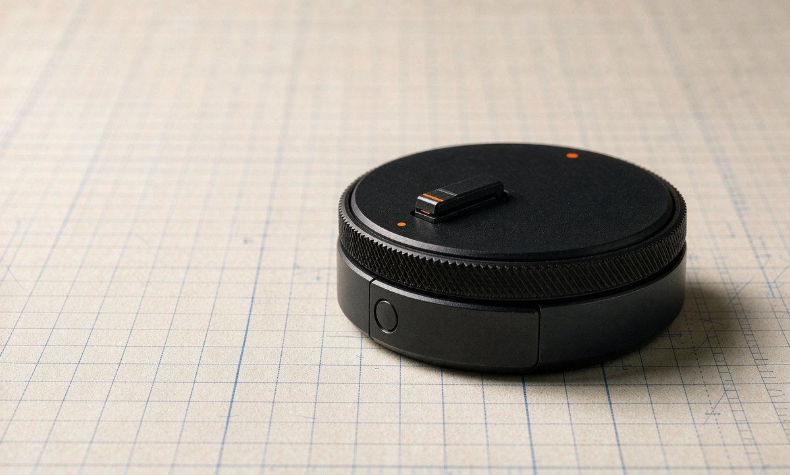
徕卡 M 拨盘
LEICA M / TACTILE DIAL
金属的冷峻、滚花的咬合、机身的重量——它先是一件“被制造出来的物件”。
“滚花让手指有抓力，阻尼让转动有节奏。”
制造美学是根，智能交互是枝，设计是连接两者的语言。
今天我们不背名词，只建立一套能判断、能落笔的框架。
总课程是《制造美学下的产业思维》。制造美学是顶层，智能交互是其中一条体验支线，产业思维是判断方法。
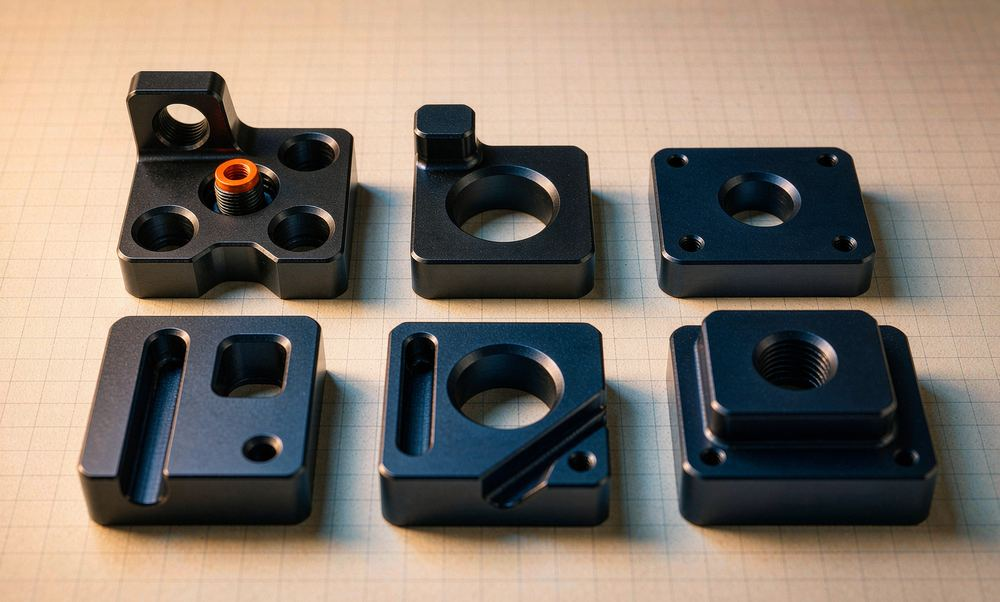
材料 · 结构 · 工艺 · CMF
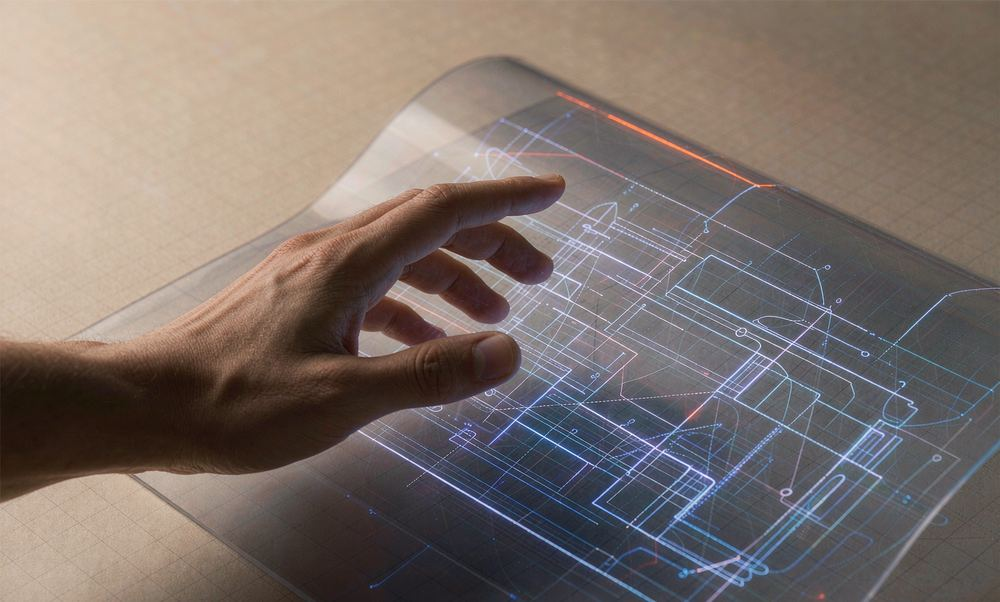
感知 · 理解 · 响应 · 协同
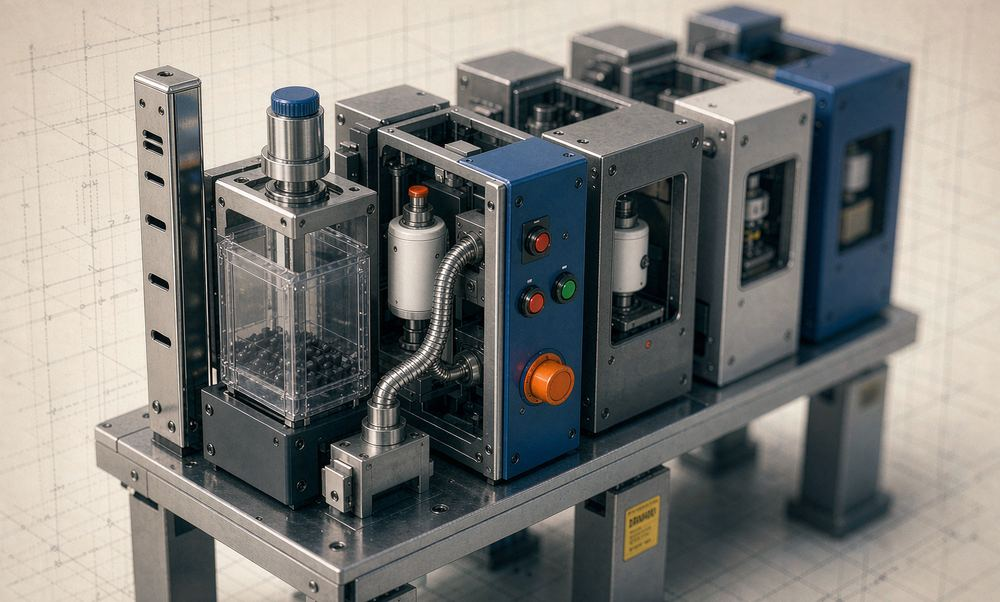
成本 · 供应链 · 商业 · 生命周期
从制造美学到智能交互：本质、脉络、案例与工业设计的位置。
全球市场格局、制造场景的智能交互落地、未来趋势与伦理边界。
从起床到走进教室，六个动作里，机器都在替你做判断。点击卡片，看看哪些是你在操作，哪些是机器在猜。
只讲那些直接改变交互感受的制造细节：滚花、阻尼、按键行程、材料触感。它们是交互的物理基础，不是外观装饰。

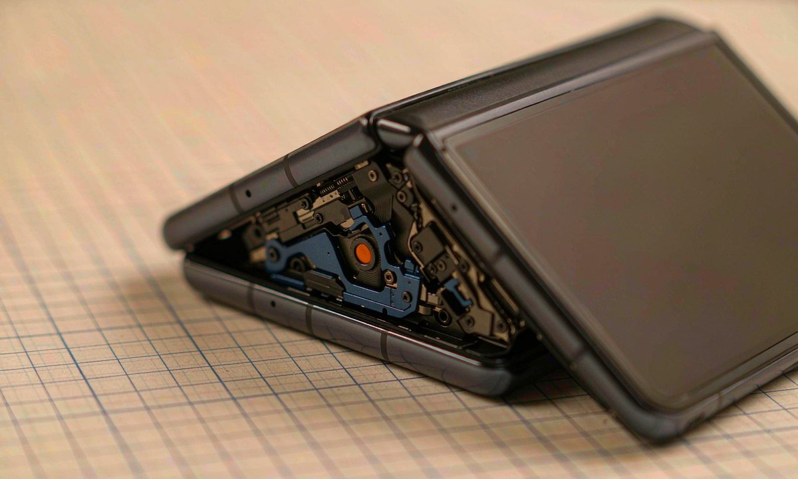
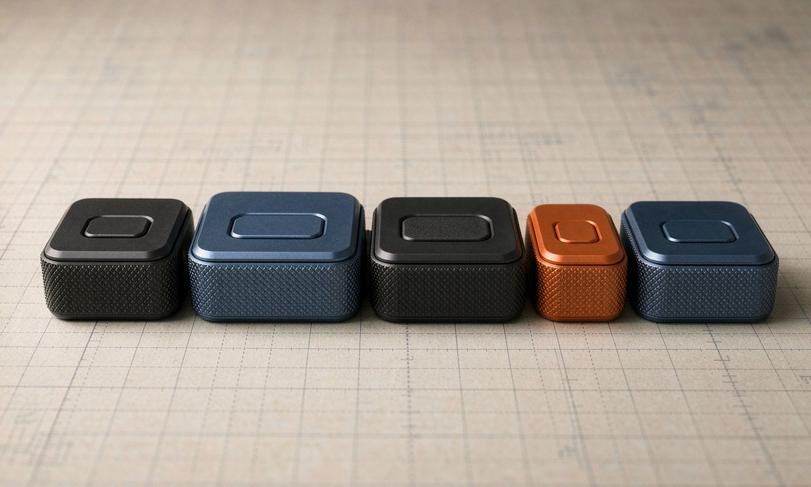
智能交互不是“把按钮换成语音”，也不是“在界面上加一个 AI 助手”。它是机器在感知用户、场景和上下文的基础上，推断人的真实意图，并在合适的时机主动响应。
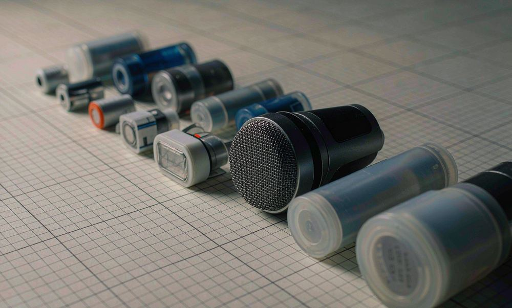
语音、图像、手势、位置、温度、设备状态——先看见场景，才谈得上理解。
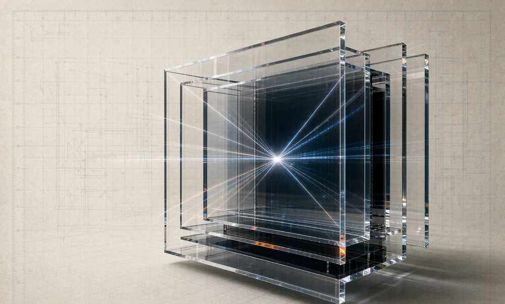
结合上下文、对象、历史与场景，推断真实目标；能接住含糊、省略和多意图。
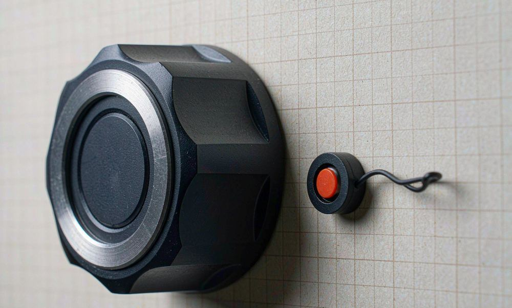
执行、追问、给候选、主动建议、即时生成界面；关键是给出可执行的下一步。
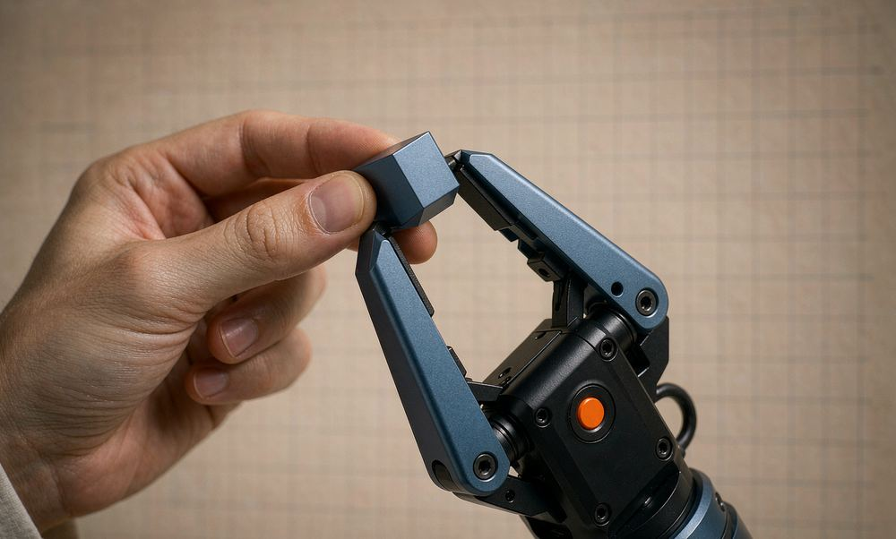
机器补细节、做执行，人做关键决定；人可打断、可纠正、可接管。
左边是“关键词匹配”，右边是“理解意图＋主动响应”。点一下，听同一句“有点冷”在两个系统里发生了什么。
工业设计通常停在①物理层和②界面层。往上走一层，你会开始定义任务、系统和产业——这就是“设计”从造型走向产品定义的地方。
形态在变、输入在变、状态在变、智能体开始替你执行。课堂精讲 5 个，完整案例库有 44 个。
软件产品里的流程、状态机、权限、数据埋点、API、灰度发布，在实体产品里都能找到对应物。不是转行，是换一种材料继续做交互。
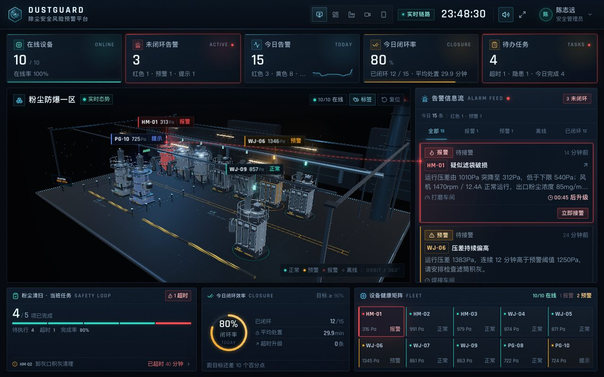
4 个角色、4 块屏、1 条告警闭环。不是“一个人用的软件”，是给四个岗位各一块“该看的屏”。
不是固定的“中游”，而是产品定义与开发环节：上游给能力，下游给场景，中间决定产品长什么样、怎么响应、值不值得做。
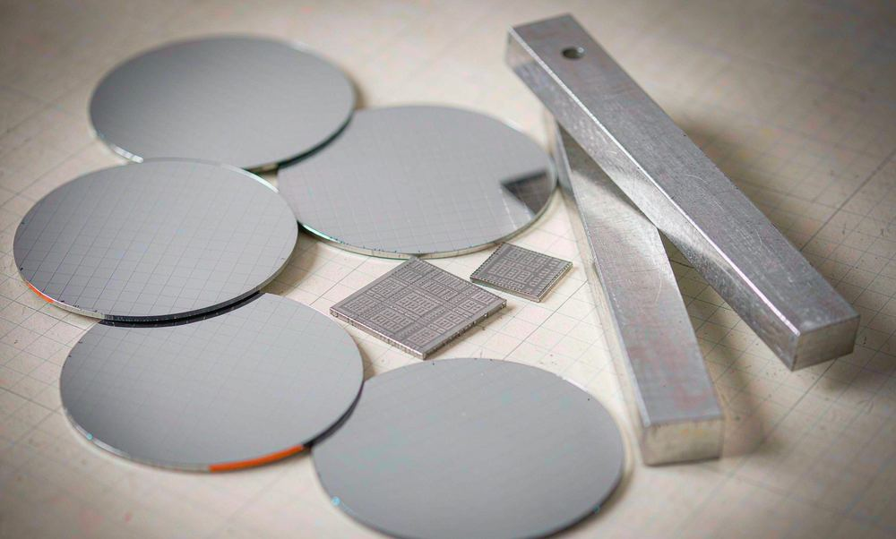
芯片、算法、云服务、传感器、材料。解决“能不能做到”，交付技术指标。
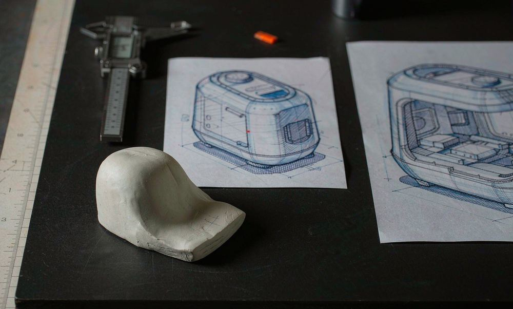
产品定义、交互设计、形态设计、CMF。解决“用户要不要用”，交付可用的产品。
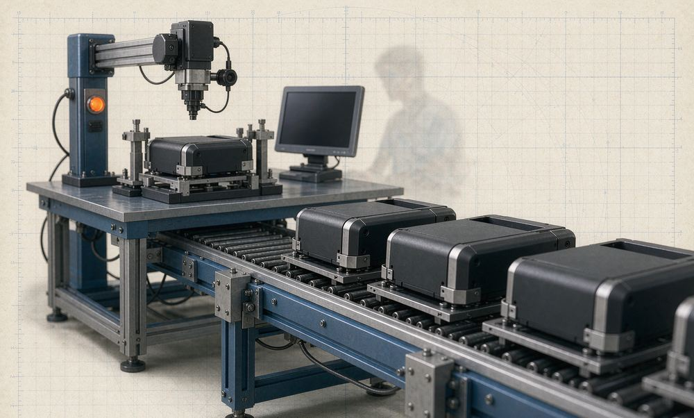
门店、产线、售后、内容服务。解决“用起来值不值”，交付持续的使用。
产业思维不是“知道产业链”，而是能判断：这个交互值不值得做、成本能不能扛、供应链能不能跟上、出了问题谁负责。
DUSTGUARD 的 ROI 测算、三档报价、“能做/不能做”边界，就是一套产业思维的展示：它不只讲界面，还讲这套系统怎么被卖出去、怎么落地。
记住这三条，第二次课直接从制造场景接上。
智能交互的本质是理解意图并主动响应；设计对象从界面转向判断。
拐点在 2020 年后：多模态统一理解＋边缘侧实时响应，让“说一句就完成”成立；2022 后进入智能体与空间交互。
工业设计的位置在定义交互：定场景、定形态、定响应策略。
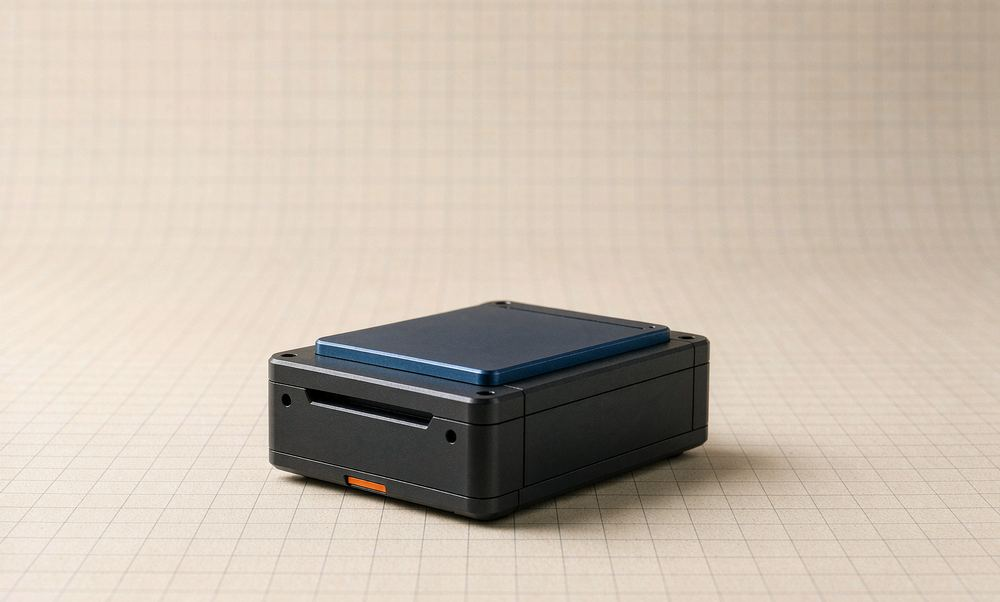
选一个你喜欢的工业产品：拍三张细节图（材料 / 结构 / 工艺或 CMF 各一张），再用“理解意图＋主动响应”拆一次成功、一次失败，各写 100 字。